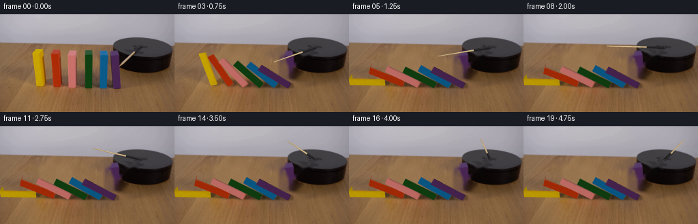
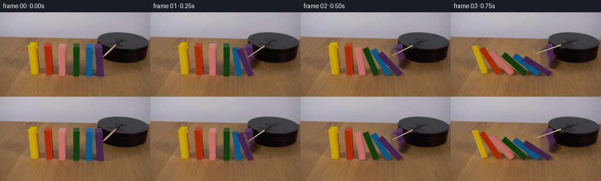
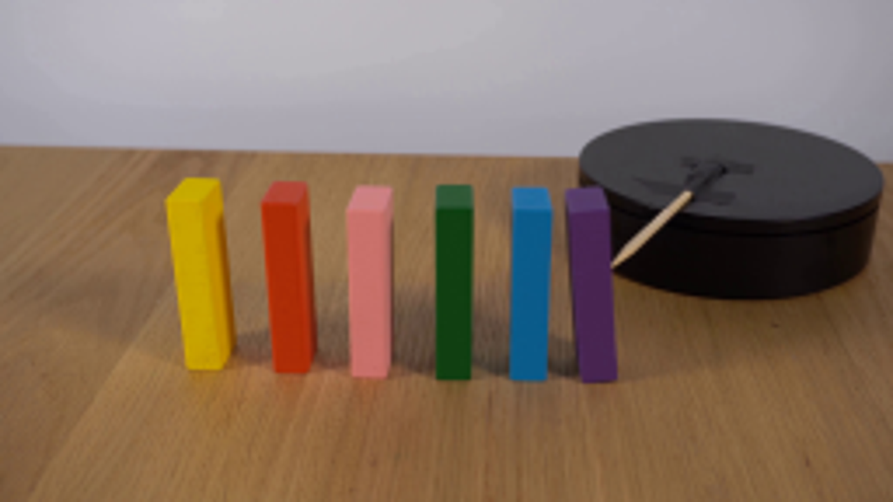
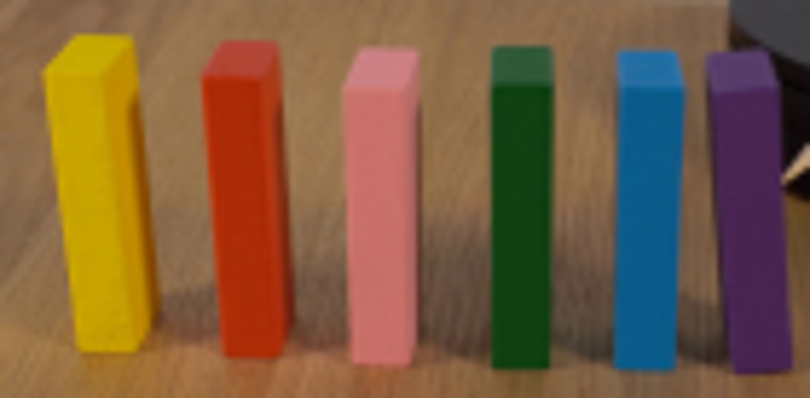
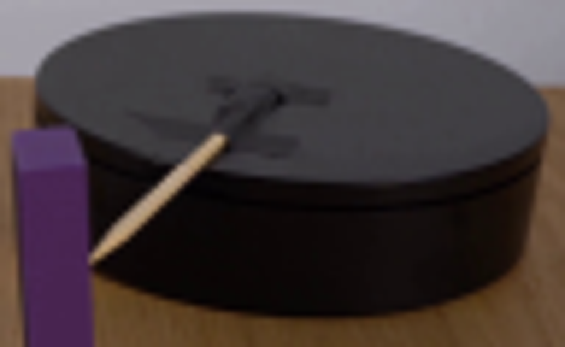

CODING AGENTS AS PIXEL WORLD MODELS
traex/GPT-6-Astra · 0035
点击播放 · 原生 RGB 像素
此结果可播放，但该运行尚未通过最终提交审核。页面展示不代表评测通过。
逐轮保存的候选
回放视频、检查图与代码变化。
每份候选均可单独播放。实际图片检查记录在下方工具轨迹中。
候选 01播放与检查图
点击播放 · 原生 RGB 像素


展开代码变化
--- 上一保存版本
+++ 本次保存版本
@@ -0,0 +1,320 @@
+from pathlib import Path
+import math
+import numpy as np
+import cv2
+from PIL import Image, ImageDraw, ImageFilter
+from scipy.ndimage import gaussian_filter
+from scipy.spatial import ConvexHull
+from artifact_io import save
+
+ROOT=Path(__file__).resolve().parent
+SRC=np.array(Image.open(ROOT/'first_frame.png').convert('RGB'))
+H,W=SRC.shape[:2]
+SS=4
+# Front painted faces, following the corners of the six real wooden dominoes.
+FACES=[
+ [(53.2,105.1),(63.6,105.3),(58.5,57.4),(47.6,57.1)],
+ [(78.8,107.0),(88.6,107.2),(86.2,58.6),(75.0,58.1)],
+ [(100.8,108.3),(111.3,108.5),(111.6,60.5),(99.2,60.2)],
+ [(124.8,109.0),(135.1,109.0),(135.4,59.9),(124.8,59.7)],
+ [(145.9,109.1),(156.5,109.1),(157.8,60.8),(146.7,60.3)],
+ [(166.5,109.6),(177.0,109.2),(174.3,61.0),(163.7,61.3)]
+]
+BACKTOP=[[(53.4,51.6),(62.0,51.8)],[(77.3,52.5),(87.8,52.7)],[(102.0,54.0),(112.6,54.5)],[(125.1,53.6),(135.0,53.7)],[(146.9,54.5),(156.9,54.7)],[(162.6,55.1),(172.4,54.3)]]
+BACKBOT=[[(57,99),(66.8,99.7)],[(81,101),(90.8,101.2)],[(104,103),(113.2,102.8)],[(125.3,103),(135,102.5)],[(146,103),(156,103)],[(165.5,103.3),(174.9,102.9)]]
+XS=np.array([p[0][0] for p in FACES]); WIDTHS=np.array([10.4,10.3,11.1,10.5,10.8,10.4]); HEIGHTS=np.array([52,52,51.8,52.7,52.4,52.3])
+DEPTH=13.0
+
+
+def poly_mask(points,scale=1):
+ out=np.zeros((H*scale,W*scale),np.uint8)
+ cv2.fillPoly(out,[np.round(np.array(points)*scale).astype(np.int32)],255)
+ return out
+
+# Construct the exposed tabletop from surrounding unoccluded wood. Its fine grain
+# comes from the lower part of the same photograph, not an external texture.
+def prepare_background():
+ holes=np.zeros((H,W),np.uint8)
+ for f,bt,bb in zip(FACES,BACKTOP,BACKBOT):
+ pts=np.array(f+bt+bb); hull=cv2.convexHull(pts.astype(np.float32)).reshape(-1,2)
+ holes=np.maximum(holes,poly_mask(hull))
+ holes=cv2.dilate(holes,np.ones((3,3),np.uint8))
+ # Shadows cast to the right and slightly behind the standing pieces.
+ sm=np.zeros((H,W),np.uint8)
+ for i,f in enumerate(FACES):
+ x,y=f[0]; r=f[1][0]
+ p=[(x-1,y+2),(r+11,y+3),(r+17,y-12),(r+7,y-31),(x+8,y-29)]
+ sm=np.maximum(sm,poly_mask(p))
+ # Only the table belongs to this restoration, not the black turntable.
+ protect=np.zeros((H,W),np.uint8)
+ cv2.ellipse(protect,(209,60),(45,26),0,0,360,255,-1)
+ protect[:43]=255
+ holes[protect>0]=0
+ sm[protect>0]=0
+ m=np.maximum(holes,sm)
+ m=cv2.dilate(m,np.ones((3,3),np.uint8))
+ m[protect>0]=0
+ bg=cv2.inpaint(SRC,m,5,cv2.INPAINT_TELEA).astype(float)
+ # Add subtle anisotropic wood grain into the newly revealed areas.
+ low=gaussian_filter(SRC.astype(float),sigma=(1.1,1.1,0))
+ high=SRC.astype(float)-low
+ yy,xx=np.mgrid[:H,:W].astype(np.float32)
+ # Borrow grain from below the row, projected along the grain direction.
+ sy=115+(yy-45)*.36
+ sx=xx-(sy-yy)*.65
+ sx=np.mod(sx,255)
+ detail=cv2.remap(high.astype(np.float32),sx,sy,cv2.INTER_LINEAR,borderMode=cv2.BORDER_REFLECT)
+ # Do not introduce a texture seam at the rim of the restored strip.
+ a=cv2.GaussianBlur(m.astype(float)/255,(0,0),.65)
+ bg+=detail*.90*a[...,None]
+ bg=np.uint8(np.clip(bg,0,255))
+ # Remove the original arm (and its soft nearby shadow) on the disk.
+ rod=np.zeros((H,W),np.uint8)
+ cv2.line(rod,(175,76),(205,49),255,5,cv2.LINE_AA)
+ cv2.line(rod,(186,60),(201,61),255,5,cv2.LINE_AA)
+ rod[holes>0]=0
+ bg=cv2.inpaint(bg,rod,3,cv2.INPAINT_TELEA)
+ rodonly=cv2.inpaint(SRC,rod,3,cv2.INPAINT_TELEA)
+ return bg,rodonly,m
+
+BG,RODLESS,RESTORE=prepare_background()
+
+# Rectify the actual paint texture on each original face.
+def extract_face(quad,size):
+ w,h=size
+ target=np.array([[0,h-1],[w-1,h-1],[w-1,0],[0,0]],np.float32)
+ M=cv2.getPerspectiveTransform(np.float32(quad),target)
+ return cv2.warpPerspective(SRC,M,(w,h),flags=cv2.INTER_CUBIC,borderMode=cv2.BORDER_REPLICATE)
+
+TEXTURES=[]
+for i,f in enumerate(FACES):
+ front=extract_face(f,(48,208))
+ topquad=[f[3],f[2],BACKTOP[i][1],BACKTOP[i][0]]
+ top=extract_face(topquad,(48,52))
+ # The formerly hidden narrow side is painted the same color, with modest
+ # lightening when its long surface turns upward toward the soft light.
+ side=cv2.resize(front[:,12:28],(52,208),interpolation=cv2.INTER_LINEAR)
+ TEXTURES.append((front,top,side))
+
+# Analytic rigid domino contact: each piece rotates on its lower left edge.
+def body(i,a):
+ x=XS[i]; w=WIDTHS[i]; h=HEIGHTS[i]
+ u=np.array([-math.sin(a),math.cos(a)]); v=np.array([math.cos(a),math.sin(a)])
+ p=np.array([x,0.])
+ return np.array([p,p+w*v,p+w*v+h*u,p+h*u])
+
+def intersects(p,q):
+ for r in (p,q):
+ d=np.roll(r,-1,axis=0)-r
+ axes=np.stack([-d[:,1],d[:,0]],axis=1)
+ for a in axes[:2]:
+ s=p@a;t=q@a
+ if s.max()<=t.min()+1e-7 or t.max()<=s.min()+1e-7:return False
+ return True
+
+GRID=np.linspace(0,math.pi/2,1001)
+LIMITS=[]
+for i in range(1,6):
+ vals=[]
+ for angle in GRID:
+ left=body(i-1,angle)
+ lo=0.; hi=math.pi/2
+ if not intersects(left,body(i,hi-1e-5)):
+ # Search first contact, even if a body would have passed through by 90deg.
+ ts=np.linspace(0,math.pi/2,41)
+ hh=next((k for k in range(1,41) if intersects(left,body(i,ts[k]))),None)
+ if hh is None: vals.append(hi);continue
+ lo=ts[hh-1];hi=ts[hh]
+ for _ in range(19):
+ mid=(lo+hi)/2
+ if intersects(left,body(i,mid)):hi=mid
+ else:lo=mid
+ vals.append(lo)
+ vals=np.array(vals);LIMITS.append((vals,np.gradient(vals,GRID)))
+
+def limit(i,ang):
+ arr,der=LIMITS[i-1];u=np.clip(ang/(math.pi/2)*1000,0,999.9999);j=int(u);r=u-j
+ return arr[j]*(1-r)+arr[j+1]*r, max(.02,min(3,der[j]*(1-r)+der[j+1]*r))
+
+def trajectory():
+ dt=1/1200
+ a=np.zeros(6);v=np.zeros(6);out=[];nextsample=0
+ for step in range(6001):
+ t=step*dt
+ if step%300==0:
+ out.append(a.copy())
+ if t>=5:break
+ # A short drive impulse from the rotating stick starts the rightmost block.
+ if .055<t<.21:
+ v[5]=max(v[5],1.65)
+ acc=3*550/(2*HEIGHTS)*np.sin(a)-.15*v
+ v+=dt*acc;a+=dt*v
+ for _ in range(7):
+ # Inelastic tabletop impact.
+ if a[0]>math.pi/2:
+ a[0]=math.pi/2
+ if v[0]>0:v[0]=-.09*v[0] if v[0]>.9 else 0
+ for i in range(1,6):
+ lim,d=limit(i,a[i-1]);err=a[i]-lim
+ if err>0:
+ leftfixed=a[i-1]>=math.pi/2-1e-6 and i==1
+ if leftfixed:
+ a[i]=lim;v[i]=min(v[i],0)
+ else:
+ corr=err/(1+d*d)
+ a[i]-=corr;a[i-1]+=d*corr
+ rel=v[i]-d*v[i-1]
+ if rel>0:
+ impulse=rel/(1+d*d)
+ v[i]-=impulse;v[i-1]+=d*impulse
+ a=np.maximum(a,0)
+ return np.array(out[:20])
+ANGLES=trajectory()
+
+# Per-block projection calibrated directly against the photographed cuboids.
+# Slight taper and lean retain the placement and hand-made irregularities.
+def project(i,x,z,depth=0):
+ f=np.array(FACES[i]);h=HEIGHTS[i];w=WIDTHS[i]
+ bl,br,tr,tl=f
+ # front-plane affine basis plus a small bilinear perspective correction
+ vx=(br-bl)/w;vz=(tl-bl)/h
+ cross=(tr-tl-br+bl)
+ p=bl+x*vx+z*vz+cross*(x/w)*(z/h)
+ dvec=(np.array(BACKTOP[i][0])+np.array(BACKTOP[i][1])-tl-tr)/2/DEPTH
+ p=p+depth*dvec
+ return p
+
+def vertices(i,a):
+ c=math.cos(a);s=math.sin(a);w=WIDTHS[i];h=HEIGHTS[i]
+ result=[]
+ for d in (0,DEPTH):
+ for x,z in ((0,0),(w,0),(w,h),(0,h)):
+ xx=x*c-z*s;zz=x*s+z*c
+ result.append(project(i,xx,zz,d))
+ return np.array(result)
+
+
+def warp_texture(canvas,texture,quad,gain=1):
+ texture=np.uint8(np.clip(texture.astype(float)*gain,0,255))
+ hh,ww=texture.shape[:2]
+ src=np.float32([[0,hh-1],[ww-1,hh-1],[ww-1,0],[0,0]])
+ dst=np.float32(quad)*SS
+ # Degenerate edge-on faces contribute no area.
+ if abs(cv2.contourArea(dst))<1:return
+ mat=cv2.getPerspectiveTransform(src,dst)
+ warped=cv2.warpPerspective(texture,mat,(W*SS,H*SS),flags=cv2.INTER_CUBIC,borderMode=cv2.BORDER_REPLICATE)
+ alpha=np.zeros((H*SS,W*SS),np.uint8)
+ cv2.fillConvexPoly(alpha,np.round(dst).astype(np.int32),255,lineType=cv2.LINE_AA)
+ aa=alpha.astype(np.float32)[...,None]/255
+ canvas[:]=canvas*(1-aa)+warped*aa
+
+
+def draw_block(canvas,i,a):
+ v=vertices(i,a)
+ front,top,side=TEXTURES[i]
+ # The broad front remains toward the camera. A long narrow side becomes
+ # the illuminated upper face as a domino tips to its left.
+ # back and underside are drawn first, then visible upper/side faces.
+ faces=[([4,5,6,7],front,.68),([0,1,5,4],top,.65),([1,5,6,2],side,.78),([3,2,6,7],top,1.0-.18*math.sin(a)),([0,4,7,3],side,.84+.25*math.sin(a)),([0,1,2,3],front,1.0-.07*math.sin(a))]
+ # Winding tests in image space cull hidden sides without a renderer.
+ # Front is always visible; other faces use calibrated initial geometry.
+ for ids,tex,gain in faces:
+ q=v[ids]
+ area=cv2.contourArea(q.astype(np.float32),oriented=True)
+ # Front winding negative. Outward face order above is mixed; handle the
+ # three exposed surfaces by geometric position rather than z buffering.
+ if ids==[4,5,6,7] or ids==[0,1,5,4]:continue
+ if ids==[1,5,6,2] and area<0:continue
+ if ids==[0,4,7,3] and area<0:continue
+ if ids==[3,2,6,7] and area<0:continue
+ warp_texture(canvas,tex,q,gain)
+
+
+def shadow_layer(i,a):
+ c=math.cos(a);s=math.sin(a);w=WIDTHS[i];h=HEIGHTS[i]
+ pts=[]
+ for d in (0,DEPTH):
+ for x,z in ((0,0),(w,0),(w,h),(0,h)):
+ xx=x*c-z*s;zz=x*s+z*c
+ # diffuse key light is upper-left/front of the demonstration
+ p=project(i,xx+.33*zz,0,d+.29*zz)
+ pts.append(p)
+ pts=cv2.convexHull(np.float32(pts)).reshape(-1,2)
+ m=poly_mask(pts,SS).astype(float)/255
+ blur=(.95+1.0*math.cos(a))*SS
+ m=cv2.GaussianBlur(m,(0,0),blur)
+ contact=poly_mask(pts,SS).astype(float)/255
+ contact=cv2.GaussianBlur(contact,(0,0),.5*SS)
+ return np.clip(.17*m+.11*contact,0,.4)
+
+
+def arm_points(t):
+ # Constant clockwise motion after a short motor start, in the table plane.
+ rot=.67*(t-.15*(1-math.exp(-t/.15)))
+ phi=1.973+rot
+ return np.array([207.0,49.0]),np.array([84.6*math.cos(phi),30.46*math.sin(phi)])
+
+def draw_arm(canvas,t):
+ pivot,vec=arm_points(t)
+ end=pivot+vec
+ p=pivot+vec*.315
+ length=np.linalg.norm(vec)
+ n=np.array([-vec[1],vec[0]])/length
+ # A narrow, softly cast arm shadow travels with the stick across the disk.
+ sh=np.zeros((H*SS,W*SS),np.uint8)
+ cv2.line(sh,tuple(np.round((pivot+[1,1])*SS).astype(int)),tuple(np.round((end+[1.5,1.3])*SS).astype(int)),255,SS*2,cv2.LINE_AA)
+ sh=cv2.GaussianBlur(sh,(0,0),SS*.85).astype(float)/255
+ yy,xx=np.mgrid[:H*SS,:W*SS]/SS
+ disk=((xx-209)/44)**2+((yy-50)/16)**2<1
+ canvas*=1-(sh*disk*.19)[...,None]
+ def polygon(ps,color):
+ cv2.fillConvexPoly(canvas,np.round(np.array(ps)*SS).astype(np.int32),color,lineType=cv2.LINE_AA)
+ # Charcoal rotating collar.
+ polygon([pivot+n*1.65,p+n*1.5,p-n*1.5,pivot-n*1.65],(29,28,30))
+ cv2.line(canvas,tuple(np.round((pivot+n*.7)*SS).astype(int)),tuple(np.round((p+n*.7)*SS).astype(int)),(53,51,51),SS,cv2.LINE_AA)
+ # Cylindrical wooden rod with a gently rounded/tapered striking end.
+ polygon([p+n*1.15,end+n*.45,end+vec/length*.35,end-n*.6,p-n*1.0],(155,130,88))
+ polygon([p+n*.9,end+n*.3,end-n*.10,p-n*.42],(211,186,139))
+ cv2.line(canvas,tuple(np.round((p+n*.49)*SS).astype(int)),tuple(np.round((end+n*.1)*SS).astype(int)),(224,204,162),max(1,int(SS*.45)),cv2.LINE_AA)
+ cv2.ellipse(canvas,tuple(np.round(pivot*SS).astype(int)),(int(2.5*SS),int(1.1*SS)),0,0,360,(36,35,37),-1,cv2.LINE_AA)
+ cv2.ellipse(canvas,tuple(np.round((pivot+[0,-.4])*SS).astype(int)),(int(1.4*SS),int(.55*SS)),0,0,360,(59,57,58),-1,cv2.LINE_AA)
+
+
+def frame(t,angles):
+ # Reveal only the area of the pieces that have actually started to move.
+ moving=angles>.0005
+ local=np.zeros((H,W),np.uint8)
+ for i,on in enumerate(moving):
+ if not on:continue
+ x,y=FACES[i][0];r=FACES[i][1][0]
+ pts=np.array(FACES[i]+BACKTOP[i]+BACKBOT[i]);hull=cv2.convexHull(pts.astype(np.float32)).reshape(-1,2)
+ m=cv2.dilate(poly_mask(hull),np.ones((5,5),np.uint8))
+ shadow=poly_mask([(x-2,y+4),(r+16,y+4),(r+20,y-14),(r+8,y-32),(x+6,y-30)])
+ local=np.maximum(local,np.maximum(m,shadow))
+ local=(local.astype(float)/255)*(RESTORE.astype(float)/255)
+ local=cv2.GaussianBlur(local,(0,0),.45)
+ base=RODLESS.astype(float)*(1-local[...,None])+BG.astype(float)*local[...,None]
+ canvas=cv2.resize(base.astype(np.float32),(W*SS,H*SS),interpolation=cv2.INTER_CUBIC)
+ for i,on in enumerate(moving):
+ if on:
+ sha=shadow_layer(i,angles[i]);canvas*=1-sha[...,None]
+ draw_arm(canvas,t)
+ # Paint from left to right so each upper domino rests above its neighbor.
+ for i in range(6):
+ if moving[i]:draw_block(canvas,i,angles[i])
+ else:
+ # Preserve original stationary blocks exactly, and occlude the arm.
+ pts=np.array(FACES[i]+BACKTOP[i]+BACKBOT[i]);hull=cv2.convexHull(pts.astype(np.float32)).reshape(-1,2)
+ m=poly_mask(hull,SS).astype(float)/255
+ original=cv2.resize(SRC,(W*SS,H*SS),interpolation=cv2.INTER_CUBIC)
+ canvas[:]=canvas*(1-m[...,None])+original*m[...,None]
+ result=cv2.resize(canvas,(W,H),interpolation=cv2.INTER_AREA)
+ return np.uint8(np.clip(result,0,255))
+
+if __name__=='__main__':
+ (ROOT/'.tmp').mkdir(exist_ok=True)
+ Image.fromarray(BG).save(ROOT/'.tmp/background.png')
+ print('Angles degrees by frame:\n',np.round(ANGLES*180/math.pi,1))
+ frames=[SRC.copy()]
+ for j in range(1,20):frames.append(frame(j/4,ANGLES[j]))
+ save(np.array(frames,dtype=np.uint8),ROOT)
可观测工具轨迹
实际执行的命令与返回图片。
命令 1exit 0
/bin/bash -lc 'ls -la && cat prompt.txt && cat GENERATION_RULES.md'
命令 2exit 0
/bin/bash -lc "cat artifact_io.py && python - <<'PY'
from PIL import Image
im=Image.open('first_frame.png');print(im.size);im.resize((1024,576)).save('.tmp/large.png')
PY"命令 3exit 0
/bin/bash -lc "python - <<'PY' import importlib.util for s in ['cv2','numpy','scipy','PIL']: print(s, bool(importlib.util.find_spec(s))) PY"
命令 4exit 0
/bin/bash -lc "python - <<'PY'
from PIL import Image
im=Image.open('first_frame.png'); im.crop((40,45,180,114)).resize((1120,552)).save('.tmp/blocks.png')
PY"命令 5exit 0
/bin/bash -lc "python - <<'PY'
from PIL import Image
im=Image.open('first_frame.png'); im.crop((160,32,256,91)).resize((960,590)).save('.tmp/arm.png')
PY"命令 6exit 0
/bin/bash -lc "cat > .tmp/fit.py <<'PY' import numpy as np from scipy.optimize import least_squares # measured front corners bottom-left,bottom-right,top-right,top-left then depth back top pts=np.array([ [[53,105],[63,105],[58.7,57],[47.8,57],[62,51],[67,99]], [[79,107],[89,107],[85.9,58],[75,58],[87.7,52.5],[91,101]], [[101,108.5],[111,108.5],[111.7,60.5],[99,60.5],[112.5,54],[113,103]], [[125,109],[135.2,109],[135.4,59.5],[124.6,59.5],[135.2,53],[136.2,102.5]], [[146.1,109],[156.5,109],[158.2,60.5],[146.8,60.5],[156.8,54],[157,103]], [[166.8,109.4],[177.2,109.4],[174.2,61],[163.5,61],[172,54.5],[174.3,103]]]) # Purple leans screen right as rises? front top left163.5<166.8 despite being right ofcenter => slight actual leaned left or row skew depth. PY"
命令 7exit 0
/bin/bash -lc "cat > generate.py <<'PY'
from pathlib import Path
import math
import numpy as np
import cv2
from PIL import Image, ImageDraw, ImageFilter
from scipy.ndimage import gaussian_filter
from scipy.spatial import ConvexHull
from artifact_io import save
ROOT=Path(__file__).resolve().parent
SRC=np.array(Image.open(ROOT/'first_frame.png').convert('RGB'))
H,W=SRC.shape[:2]
SS=4
# Front painted faces, following the corners of the six real wooden dominoes.
FACES=[
[(53.2,105.1),(63.6,105.3),(58.5,57.4),(47.6,57.1)],
[(78.8,107.0),(88.6,107.2),(86.2,58.6),(75.0,58.1)],
[(100.8,108.3),(111.3,108.5),(111.6,60.5),(99.2,60.2)],
[(124.8,109.0),(135.1,109.0),(135.4,59.9),(124.8,59.7)],
[(145.9,109.1),(156.5,109.1),(157.8,60.8),(146.7,60.3)],
[(166.5,109.6),(177.0,109.2),(174.3,61.0),(163.7,61.3)]
]
BACKTOP=[[(53.4,51.6),(62.0,51.8)],[(77.3,52.5),(87.8,52.7)],[(102.0,54.0),(112.6,54.5)],[(125.1,53.6),(135.0,53.7)],[(146.9,54.5),(156.9,54.7)],[(162.6,55.1),(172.4,54.3)]]
BACKBOT=[[(57,99),(66.8,99.7)],[(81,101),(90.8,101.2)],[(104,103),(113.2,102.8)],[(125.3,103),(135,102.5)],[(146,103),(156,103)],[(165.5,103.3),(174.9,102.9)]]
XS=np.array([p[0][0] for p in FACES]); WIDTHS=np.array([10.4,10.3,11.1,10.5,10.8,10.4]); HEIGHTS=np.array([52,52,51.8,52.7,52.4,52.3])
DEPTH=13.0
def poly_mask(points,scale=1):
out=np.zeros((H*scale,W*scale),np.uint8)
cv2.fillPoly(out,[np.round(np.array(points)*scale).astype(np.int32)],255)
return out
# Construct the exposed tabletop from surrounding unoccluded wood. Its fine grain
# comes from the lower part of the same photograph, not an external texture.
def prepare_background():
holes=np.zeros((H,W),np.uint8)
for f,bt,bb in zip(FACES,BACKTOP,BACKBOT):
pts=np.array(f+bt+bb); hull=cv2.convexHull(pts.astype(np.float32)).reshape(-1,2)
holes=np.maximum(holes,poly_mask(hull))
holes=cv2.dilate(holes,np.ones((3,3),np.uint8))
# Shadows cast to the right and slightly behind the standing pieces.
sm=np.zeros((H,W),np.uint8)
for i,f in enumerate(FACES):
x,y=f[0]; r=f[1][0]
p=[(x-1,y+2),(r+11,y+3),(r+17,y-12),(r+7,y-31),(x+8,y-29)]
sm=np.maximum(sm,poly_mask(p))
# Only the table belongs to this restoration, not the black turntable.
protect=np.zeros((H,W),np.uint8)
cv2.ellipse(protect,(209,60),(45,26),0,0,360,255,-1)
protect[:43]=255
holes[protect>0]=0
sm[protect>0]=0
m=np.maximum(holes,sm)
m=cv2.dilate(m,np.ones((3,3),np.uint8))
m[protect>0]=0
bg=cv2.inpaint(SRC,m,5,cv2.INPAINT_TELEA).astype(float)
# Add subtle anisotropic wood grain into the newly revealed areas.
low=gaussian_filter(SRC.astype(float),sigma=(1.1,1.1,0))
high=SRC.astype(float)-low
yy,xx=np.mgrid[:H,:W].astype(np.float32)
# Borrow grain from below the row, projected along the grain direction.
sy=115+(yy-45)*.36
sx=xx-(sy-yy)*.65
sx=np.mod(sx,255)
detail=cv2.remap(high.astype(np.float32),sx,sy,cv2.INTER_LINEAR,borderMode=cv2.BORDER_REFLECT)
# Do not introduce a texture seam at the rim of the restored strip.
a=cv2.GaussianBlur(m.astype(float)/255,(0,0),.65)
bg+=detail*.90*a[...,None]
bg=np.uint8(np.clip(bg,0,255))
# Remove the original arm (and its soft nearby shadow) on the disk.
rod=np.zeros((H,W),np.uint8)
cv2.line(rod,(175,76),(205,49),255,5,cv2.LINE_AA)
cv2.line(rod,(186,60),(201,61),255,5,cv2.LINE_AA)
rod[holes>0]=0
bg=cv2.inpaint(bg,rod,3,cv2.INPAINT_TELEA)
rodonly=cv2.inpaint(SRC,rod,3,cv2.INPAINT_TELEA)
return bg,rodonly,m
BG,RODLESS,RESTORE=prepare_background()
# Rectify the actual paint texture on each original face.
def extract_face(quad,size):
w,h=size
target=np.array([[0,h-1],[w-1,h-1],[w-1,0],[0,0]],np.float32)
M=cv2.getPerspectiveTransform(np.float32(quad),target)
return cv2.warpPerspective(SRC,M,(w,h),flags=cv2.INTER_CUBIC,borderMode=cv2.BORDER_REPLICATE)
TEXTURES=[]
for i,f in enumerate(FACES):
front=extract_face(f,(48,208))
topquad=[f[3],f[2],BACKTOP[i][1],BACKTOP[i][0]]
top=extract_face(topquad,(48,52))
# The formerly hidden narrow side is painted the same color, with modest
# lightening when its long surface turns upward toward the soft light.
side=cv2.resize(front[:,12:28],(52,208),interpolation=cv2.INTER_LINEAR)
TEXTURES.append((front,top,side))
# Analytic rigid domino contact: each piece rotates on its lower left edge.
def body(i,a):
x=XS[i]; w=WIDTHS[i]; h=HEIGHTS[i]
u=np.array([-math.sin(a),math.cos(a)]); v=np.array([math.cos(a),math.sin(a)])
p=np.array([x,0.])
return np.array([p,p+w*v,p+w*v+h*u,p+h*u])
def intersects(p,q):
for r in (p,q):
d=np.roll(r,-1,axis=0)-r
axes=np.stack([-d[:,1],d[:,0]],axis=1)
for a in axes[:2]:
s=p@a;t=q@a
if s.max()<=t.min()+1e-7 or t.max()<=s.min()+1e-7:return False
return True
GRID=np.linspace(0,math.pi/2,1001)
LIMITS=[]
for i in range(1,6):
vals=[]
for angle in GRID:
left=body(i-1,angle)
lo=0.; hi=math.pi/2
if not intersects(left,body(i,hi-1e-5)):
# Search first contact, even if a body would have passed through by 90deg.
ts=np.linspace(0,math.pi/2,41)
hh=next((k for k in range(1,41) if intersects(left,body(i,ts[k]))),None)
if hh is None: vals.append(hi);continue
lo=ts[hh-1];hi=ts[hh]
for _ in range(19):
mid=(lo+hi)/2
if intersects(left,body(i,mid)):hi=mid
else:lo=mid
vals.append(lo)
vals=np.array(vals);LIMITS.append((vals,np.gradient(vals,GRID)))
def limit(i,ang):
arr,der=LIMITS[i-1];u=np.clip(ang/(math.pi/2)*1000,0,999.9999);j=int(u);r=u-j
return arr[j]*(1-r)+arr[j+1]*r, max(.02,min(3,der[j]*(1-r)+der[j+1]*r))
def trajectory():
dt=1/1200
a=np.zeros(6);v=np.zeros(6);out=[];nextsample=0
for step in range(6001):
t=step*dt
if step%300==0:
out.append(a.copy())
if t>=5:break
# A short drive impulse from the rotating stick starts the rightmost block.
if .055<t<.21:
v[5]=max(v[5],1.65)
acc=3*550/(2*HEIGHTS)*np.sin(a)-.15*v
v+=dt*acc;a+=dt*v
for _ in range(7):
# Inelastic tabletop impact.
if a[0]>math.pi/2:
a[0]=math.pi/2
if v[0]>0:v[0]=-.09*v[0] if v[0]>.9 else 0
for i in range(1,6):
lim,d=limit(i,a[i-1]);err=a[i]-lim
if err>0:
leftfixed=a[i-1]>=math.pi/2-1e-6 and i==1
if leftfixed:
a[i]=lim;v[i]=min(v[i],0)
else:
corr=err/(1+d*d)
a[i]-=corr;a[i-1]+=d*corr
rel=v[i]-d*v[i-1]
if rel>0:
impulse=rel/(1+d*d)
v[i]-=impulse;v[i-1]+=d*impulse
a=np.maximum(a,0)
return np.array(out[:20])
ANGLES=trajectory()
# Per-block projection calibrated directly against the photographed cuboids.
# Slight taper and lean retain the placement and hand-made irregularities.
def project(i,x,z,depth=0):
f=np.array(FACES[i]);h=HEIGHTS[i];w=WIDTHS[i]
bl,br,tr,tl=f
# front-plane affine basis plus a small bilinear perspective correction
vx=(br-bl)/w;vz=(tl-bl)/h
cross=(tr-tl-br+bl)
p=bl+x*vx+z*vz+cross*(x/w)*(z/h)
dvec=(np.array(BACKTOP[i][0])+np.array(BACKTOP[i][1])-tl-tr)/2/DEPTH
p=p+depth*dvec
return p
def vertices(i,a):
c=math.cos(a);s=math.sin(a);w=WIDTHS[i];h=HEIGHTS[i]
result=[]
for d in (0,DEPTH):
for x,z in ((0,0),(w,0),(w,h),(0,h)):
xx=x*c-z*s;zz=x*s+z*c
result.append(project(i,xx,zz,d))
return np.array(result)
def warp_texture(canvas,texture,quad,gain=1):
texture=np.uint8(np.clip(texture.astype(float)*gain,0,255))
hh,ww=texture.shape[:2]
src=np.float32([[0,hh-1],[ww-1,hh-1],[ww-1,0],[0,0]])
dst=np.float32(quad)*SS
# Degenerate edge-on faces contribute no area.
if abs(cv2.contourArea(dst))<1:return
mat=cv2.getPerspectiveTransform(src,dst)
warped=cv2.warpPerspective(texture,mat,(W*SS,H*SS),flags=cv2.INTER_CUBIC,borderMode=cv2.BORDER_REPLICATE)
alpha=np.zeros((H*SS,W*SS),np.uint8)
cv2.fillConvexPoly(alpha,np.round(dst).astype(np.int32),255,lineType=cv2.LINE_AA)
aa=alpha.astype(np.float32)[...,None]/255
canvas[:]=canvas*(1-aa)+warped*aa
def draw_block(canvas,i,a):
v=vertices(i,a)
front,top,side=TEXTURES[i]
# The broad front remains toward the camera. A long narrow side becomes
# the illuminated upper face as a domino tips to its left.
# back and underside are drawn first, then visible upper/side faces.
faces=[([4,5,6,7],front,.68),([0,1,5,4],top,.65),([1,5,6,2],side,.78),([3,2,6,7],top,1.0-.18*math.sin(a)),([0,4,7,3],side,.84+.25*math.sin(a)),([0,1,2,3],front,1.0-.07*math.sin(a))]
# Winding tests in image space cull hidden sides without a renderer.
# Front is always visible; other faces use calibrated initial geometry.
for ids,tex,gain in faces:
q=v[ids]
area=cv2.contourArea(q.astype(np.float32),oriented=True)
# Front winding negative. Outward face order above is mixed; handle the
# three exposed surfaces by geometric position rather than z buffering.
if ids==[4,5,6,7] or ids==[0,1,5,4]:continue
if ids==[1,5,6,2] and area<0:continue
if ids==[0,4,7,3] and area<0:continue
if ids==[3,2,6,7] and area<0:continue
warp_texture(canvas,tex,q,gain)
def shadow_layer(i,a):
c=math.cos(a);s=math.sin(a);w=WIDTHS[i];h=HEIGHTS[i]
pts=[]
for d in (0,DEPTH):
for x,z in ((0,0),(w,0),(w,h),(0,h)):
xx=x*c-z*s;zz=x*s+z*c
# diffuse key light is upper-left/front of the demonstration
p=project(i,xx+.33*zz,0,d+.29*zz)
pts.append(p)
pts=cv2.convexHull(np.float32(pts)).reshape(-1,2)
m=poly_mask(pts,SS).astype(float)/255
blur=(.95+1.0*math.cos(a))*SS
m=cv2.GaussianBlur(m,(0,0),blur)
contact=poly_mask(pts,SS).astype(float)/255
contact=cv2.GaussianBlur(contact,(0,0),.5*SS)
return np.clip(.17*m+.11*contact,0,.4)
def arm_points(t):
# Constant clockwise motion after a short motor start, in the table plane.
rot=.67*(t-.15*(1-math.exp(-t/.15)))
phi=1.973+rot
return np.array([207.0,49.0]),np.array([84.6*math.cos(phi),30.46*math.sin(phi)])
def draw_arm(canvas,t):
pivot,vec=arm_points(t)
end=pivot+vec
p=pivot+vec*.315
length=np.linalg.norm(vec)
n=np.array([-vec[1],vec[0]])/length
# A narrow, softly cast arm shadow travels with the stick across the disk.
sh=np.zeros((H*SS,W*SS),np.uint8)
cv2.line(sh,tuple(np.round((pivot+[1,1])*SS).astype(int)),tuple(np.round((end+[1.5,1.3])*SS).astype(int)),255,SS*2,cv2.LINE_AA)
sh=cv2.GaussianBlur(sh,(0,0),SS*.85).astype(float)/255
yy,xx=np.mgrid[:H*SS,:W*SS]/SS
disk=((xx-209)/44)**2+((yy-50)/16)**2<1
canvas*=1-(sh*disk*.19)[...,None]
def polygon(ps,color):
cv2.fillConvexPoly(canvas,np.round(np.array(ps)*SS).astype(np.int32),color,lineType=cv2.LINE_AA)
# Charcoal rotating collar.
polygon([pivot+n*1.65,p+n*1.5,p-n*1.5,pivot-n*1.65],(29,28,30))
cv2.line(canvas,tuple(np.round((pivot+n*.7)*SS).astype(int)),tuple(np.round((p+n*.7)*SS).astype(int)),(53,51,51),SS,cv2.LINE_AA)
# Cylindrical wooden rod with a gently rounded/tapered striking end.
polygon([p+n*1.15,end+n*.45,end+vec/length*.35,end-n*.6,p-n*1.0],(155,130,88))
polygon([p+n*.9,end+n*.3,end-n*.10,p-n*.42],(211,186,139))
cv2.line(canvas,tuple(np.round((p+n*.49)*SS).astype(int)),tuple(np.round((end+n*.1)*SS).astype(int)),(224,204,162),max(1,int(SS*.45)),cv2.LINE_AA)
cv2.ellipse(canvas,tuple(np.round(pivot*SS).astype(int)),(int(2.5*SS),int(1.1*SS)),0,0,360,(36,35,37),-1,cv2.LINE_AA)
cv2.ellipse(canvas,tuple(np.round((pivot+[0,-.4])*SS).astype(int)),(int(1.4*SS),int(.55*SS)),0,0,360,(59,57,58),-1,cv2.LINE_AA)
def frame(t,angles):
# Reveal only the area of the pieces that have actually started to move.
moving=angles>.0005
local=np.zeros((H,W),np.uint8)
for i,on in enumerate(moving):
if not on:continue
x,y=FACES[i][0];r=FACES[i][1][0]
pts=np.array(FACES[i]+BACKTOP[i]+BACKBOT[i]);hull=cv2.convexHull(pts.astype(np.float32)).reshape(-1,2)
m=cv2.dilate(poly_mask(hull),np.ones((5,5),np.uint8))
shadow=poly_mask([(x-2,y+4),(r+16,y+4),(r+20,y-14),(r+8,y-32),(x+6,y-30)])
local=np.maximum(local,np.maximum(m,shadow))
local=(local.astype(float)/255)*(RESTORE.astype(float)/255)
local=cv2.GaussianBlur(local,(0,0),.45)
base=RODLESS.astype(float)*(1-local[...,None])+BG.astype(float)*local[...,None]
canvas=cv2.resize(base.astype(np.float32),(W*SS,H*SS),interpolation=cv2.INTER_CUBIC)
for i,on in enumerate(moving):
if on:
sha=shadow_layer(i,angles[i]);canvas*=1-sha[...,None]
draw_arm(canvas,t)
# Paint from left to right so each upper domino rests above its neighbor.
for i in range(6):
if moving[i]:draw_block(canvas,i,angles[i])
else:
# Preserve original stationary blocks exactly, and occlude the arm.
pts=np.array(FACES[i]+BACKTOP[i]+BACKBOT[i]);hull=cv2.convexHull(pts.astype(np.float32)).reshape(-1,2)
m=poly_mask(hull,SS).astype(float)/255
original=cv2.resize(SRC,(W*SS,H*SS),interpolation=cv2.INTER_CUBIC)
canvas[:]=canvas*(1-m[...,None])+original*m[...,None]
result=cv2.resize(canvas,(W,H),interpolation=cv2.INTER_AREA)
return np.uint8(np.clip(result,0,255))
if __name__=='__main__':
(ROOT/'.tmp').mkdir(exist_ok=True)
Image.fromarray(BG).save(ROOT/'.tmp/background.png')
print('Angles degrees by frame:\\n',np.round(ANGLES*180/math.pi,1))
frames=[SRC.copy()]
for j in range(1,20):frames.append(frame(j/4,ANGLES[j]))
save(np.array(frames,dtype=np.uint8),ROOT)
PY
OPENBLAS_NUM_THREADS=1 python generate.py"视觉工具实际返回图片 1

视觉工具实际返回图片 2

视觉工具实际返回图片 3

保存候选 1 份；完成命令 7 次；可验证图片返回 3 张。原始 API 响应与完整日志保留在本地。